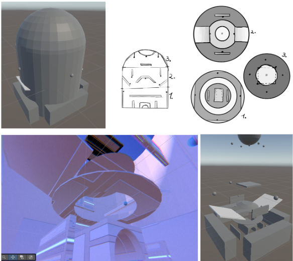

A fast-paced FPS built around fluid movement, player expression, and maintaining momentum through chained mechanics. This document covers the design decisions behind the systems and how thinking like a designer shaped the technical implementation.
Spent is a momentum-driven FPS designed around fluid traversal and high-speed combat. The player navigates an arena using mobility-based mechanics while eliminating waves of enemies and maintaining flow state. Every system was designed with the question: "does this preserve or break momentum?"
Maintain constant momentum and responsiveness. No ability should feel like a full stop.
Reward precision, timing, and chaining mechanics. The skill ceiling should feel meaningful.
Distorted visuals and feedback reinforce the robotic identity of the character.
Fast-paced gameplay that stays readable and fair — no cheap deaths.
The player navigates the arena using mobility abilities, eliminates enemy waves, and chains mechanics to maintain speed and control. Each wave is designed to create pressure that rewards movement over static play.
The core decision that shaped everything: instead of overriding movement during abilities, every system modifies existing velocity. Wall running adds forward force. Sliding adds a downward impulse. The grapple accelerates rather than teleports. This means mechanics chain naturally — a slide into a grapple into a wall run all feel connected because they share the same velocity state.
This was a deliberate design choice that required a central state machine
(PlayerMovementAdvancedFinished) to coordinate which system owns
velocity at any given moment. The result is a movement system that feels
expressive without adding complexity for the player.
The arena is designed as a movement puzzle — vertical space, walls at useful angles, grapple points placed to reward creative traversal rather than just providing shortcuts.
Each design pillar has a direct code equivalent:
SmoothlyLerpMoveSpeed() — speed transitions are lerped, not snapped, so state changes feel fluid.FlyingEnemy + EnemyShooting + EnemyHits with no duplicated logic.
The complete GDD covers level design breakdowns, full enemy behaviour specs, ability tuning values, and the full narrative context for the setting.
📄 Open Full GDD (PDF)